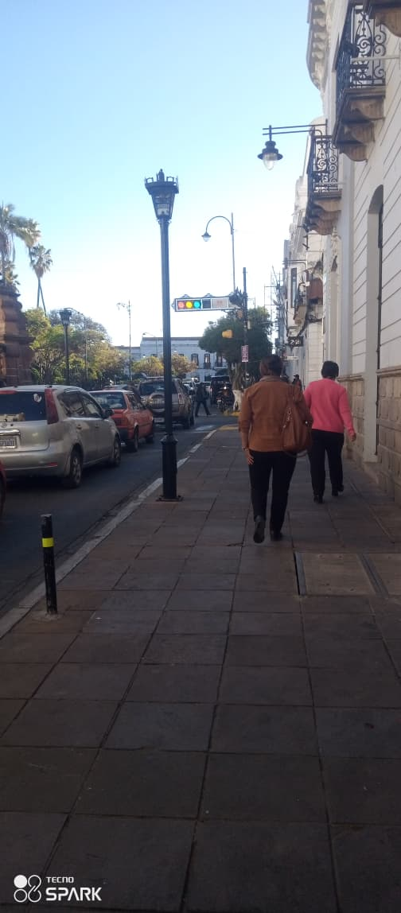

Vivo actualmente en la ciudad Blanca Sucre la Capital Constitucional de Bolivia conocida por sus edificaciones coloniales pintadas de blanco.
Sucre tiene un clima templado ideal para recorrer sus calles empedradas y disfrutar de su arquitectura.